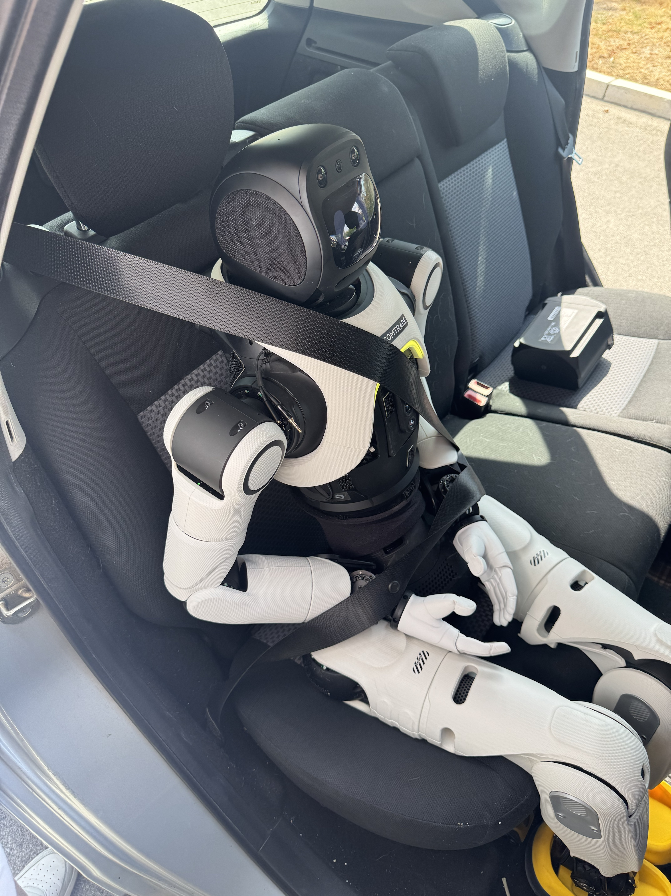

The first version of this was small: a LiveKit voice agent for one humanoid robot, built to answer questions and hold a conversation. Once that actually worked, the obvious next question was how much of it would survive contact with a second robot that didn't share the same hardware. It turned out to be most of it. What we ended up with, some months later, is a shared platform running on both the AgiBot X2 Ultra and the AgiBot A2 Ultra: voice, RAG, computer vision, person identity, gestures, face display, an operator console, and a separate teleoperation track, all sitting on top of two robots that don't even agree on how many onboard computers they have, let alone how their audio or motion hardware works.
This post is closer to a build log than a product page. It covers what actually took the time: getting audio in and out of a robot without it hearing itself, deciding when a question needs the knowledge base instead of a plain LLM answer, keeping motion commands narrow enough that a language model can't do anything dangerous with them, and building the operator tooling that turned this from a demo into something we could run unattended at an event.
What Actually Stays the Same
More of this is shared between the two robots than not. The layer that doesn't change from one model to the next:
- A LiveKit voice agent handling real-time audio transport;
- STT, an LLM, and TTS, with turn-taking logic wired between them;
- RAG backed by Qdrant for anything that needs to be factually grounded;
- Prompt and persona definitions;
- The Robot Supervisor: a FastAPI backend and a React frontend for actually running the thing;
- Conversation lifecycle management;
- Quizzes, polls, and scripted event scenarios;
- A camera bridge and vision controller;
- Face recognition with consent-based enrollment;
- A gesture bridge;
- Visual state reactions on the face display;
- An early, separate teleoperation track.
Audio access, camera streams, motion, and the face display are the parts that actually differ, and they sit behind small adapters at the bottom of the stack. Getting a second robot running mostly meant writing those adapters. The conversation logic didn't need to know or care.
How Many Computers Is a Robot, Exactly
X2 runs three separate onboard machines with clearly split jobs:
- PC1, Motion Control. Low-level body control: balance and safety states. Our application never talks to it directly, never sends arbitrary joint trajectories to it. We treated its stabilization processes as off-limits the entire time we were building on top of it.
- PC2, Development. This is where the actual AI system lives: Robot Supervisor, LiveKit server and voice agent, RAG service, Qdrant, camera bridge and vision controller, gesture bridge, and the integration processes that talk to the rest of the robot.
- PC3, Interaction (10.0.1.42). The machine that physically owns the microphones and speakers. Because it's a separate box from PC2, the audio bridge can't just open a local device: it has to reach across the network, which is why X2's audio path looks different from A2's further down.
A2 gets by with two. A comment in a2_motion.py lays out the split about as plainly as it
could be put:
Dev/brain PC (Orin, 192.168.100.110) --eth_to_x86--> Motion Controller x86 (192.168.100.100)
The Orin (a Jetson Orin-class ARM64 board, aarch64, running a real-time kernel,
5.15.136-rt-tegra PREEMPT_RT) is where all of our code runs: Supervisor, LiveKit agent,
RAG, audio bridge, camera bridge. The x86 motion controller is A2's version of X2's PC1, a box we
don't run general application code on, full stop. The internal docs are blunt about it: don't run
normal high-level custom code on the x86 motion-control computer unless you're specifically doing
vendor-approved low-level motion-control development. Unlike X2's PC1, though, A2's x86 box isn't
purely a motion computer. It also hosts the vendor's own rc_module service and a Flutter
face app (com.agibot.aimmaster.face), which ends up mattering a lot for how the
head-screen integration works later on.
The services this code actually talks to, and where they live:
| Service | Host | Port |
|---|---|---|
| McBaseService / McDataService / McMotionService | x86 (.100) | 56322 |
| MotionCommandService / SendMotionCommand | x86 (.100) | 56444 |
| rc_module (RcEmoticonPlayerService) | x86 (.100) | 59001 |
| ResourceService | Orin (.110) | 51049 |
| RobotFunctionSettingService | Orin (.110) | 51048 |
One detail worth mentioning on its own: the Orin and the x86 box each keep their own
/agibot directory, on separate disks. The face app reads the x86 copy;
ResourceService validates the Orin copy. That split is what makes it cheap to push a
screen update without touching anything the motion controller depends on.
No internal IP addresses beyond what's already here, tokens, or credentials are in this post. The layout is what matters, not the address book.
Capability isn't a flag on the robot, either. There's no has_gesture=False anywhere in
the platform code. The model spec that describes a robot has exactly five fields (id, platform,
display name, audio bridge, notes) and nothing more. Every capability instead owns its own support
map: one dict for gestures, one for the head screen, one for visual UI, one for temperature. A robot
that isn't a key in that dict simply has no support, the corresponding get_*_spec() call
returns None, and the service shuts itself down cleanly. The platform docs call this out
directly as deliberate: "broad robot capability catalogs" are something the team chose not to build.
It's a smaller, less impressive design than a capability matrix baked into every robot profile, and it
fails a lot more gracefully.
That newer, unified capability map currently covers the A2 and Unitree's G1 Edu. X2's gesture and face-display path predates it and runs through its own AimDK integration instead (below): it isn't wired into this particular abstraction yet, which says something about the newer module's rollout, not about what X2's hardware can or can't do. Where the map does apply, here's what it currently covers:
| A2 Ultra | G1 Edu | |
|---|---|---|
| gestures | agibot_a2_motion_player | unitree_g1_arm_actions |
| head screen | agibot_emoticon_player | none |
| visual UI | none | unitree_g1_audio_led |
| temperature | none | unitree_lowstate |
One Codebase, Two Robots
Nothing in the conversation logic asks whether it's talking to an X2, an A2, or something else. That question gets answered once, at startup, when the system picks a robot profile and wires in the right backends:
- AgiBot X2 Ultra's audio hardware lives on a separate physical computer (PC3) from the AI system, so its bridge has to reach across the network instead of opening a local device;
- AgiBot A2 Ultra uses a local PortAudio bridge, opening the microphone and speaker directly on the same box the AI system runs on;
- X2 drives its gestures and face display through its own AimDK integration; A2 has an independently built gesture and head-screen backend going through a completely different vendor API (below);
- Camera access goes through ROS image topics, not raw device files;
- Anything not supported on a given model just gets disabled for that run, without taking the rest of the system down with it (the capability-map mechanism above).
Conversation, RAG, personas, the supervisor, and the frontend stay the same across robots. Only the thin layer touching hardware changes. Adding the A2 was mostly writing adapters, not rebuilding anything.
Audio Bridge and LiveKit
The audio bridge is what turns a physical robot into a LiveKit participant. On each robot, it has to:
- Capture audio from the robot's physical microphones;
- Convert that capture into a mono LiveKit audio track;
- Receive TTS audio back from the LiveKit room;
- Route it to the physical speaker;
- Expose a small local control API for status, mute, gain, and clearing the playback buffer.
The two robots solve this differently, because the computers underneath them aren't laid out the same way. On the X2, the microphones and speaker are wired to PC3, and the voice agent runs on PC2, so every frame of audio crosses that machine boundary before it's useful to anything AI-related. That remote bridge works (it's what you're hearing in the videos on this page), but we don't have it documented down to the wire format the way we do for the A2 below.
A2's audio hardware sits on the same box as the AI system, the Orin, so its bridge is local: a
PortAudio process opens the microphone and speaker directly through the OS audio stack, no network hop
involved. The microphone is an 8-channel USB array, ALSA alias mic48k, exposed as
hw:AIUIUSBMC,0, running at 48 kHz for both capture and output. Four of the eight
channels carry a strong voice signal and get mixed down to mono; the other four are quieter or
reserved. Two of those reserved channels are labeled by the vendor as an AEC reference pair (a raw
arecord capture confirms they carry real signal), but the bridge doesn't actually read
them. More on why in a minute.
Everything downstream runs on frame sizes the echo canceller dictates: 10 ms APM frames (480 samples at 48 kHz) is what the AEC module wants, while PortAudio itself delivers audio in 100 ms callback blocks (4,800 samples) that get sliced down to size. Playback keeps a backlog capped around 500 ms, and stale buffered audio gets dropped outright on release or on an interruption instead of being played out late. We tried RNNoise and turned it back off: on this hardware it was an extra CPU-heavy pass that didn't earn its keep.
Echo Cancellation and Letting the Robot Be Interrupted
One of the first problems we ran into was self-echo. With an open microphone, the robot hears its own speaker, transcribes that as user speech, and starts answering itself. In a live demo, the result is exactly as awkward as it sounds.
The fix is a proper acoustic echo canceller built on the WebRTC Audio Processing Module. It needs two signals: the far-end signal, the audio being sent to the speaker, and the near-end signal, the microphone (which contains the human speaker, ambient noise, and the robot's own voice bleeding back in). AEC estimates the speaker's contribution to the mic signal and subtracts it.
On the A2, that reference signal is built in software instead of read from hardware. The bridge instantiates LiveKit's WebRTC Audio Processing Module with echo cancellation on, and feeds it a reverse stream assembled from whatever audio was actually just sent to the speaker, even though the mic array physically exposes a hardware reference pair the bridge simply doesn't use. A continuously running, software-derived reference is the main defense.
It's not the only one. A second, much cruder mechanism runs alongside it as a backstop: a timing gate that suppresses capture for a fixed window after the speaker stops, about 500 ms by default, independent of whatever the APM decided. It's a blunt tool next to continuous AEC, but it catches the case where a stray tail of playback leaks through right at the end of an utterance, which is exactly the kind of edge case that turns into "robot answers itself" in front of an audience.
With both in place, someone can interrupt the robot mid-sentence: the LiveKit agent picks up the user's speech over the echo-cancelled mic signal, stops TTS playback immediately, and drops into a listening state.
Telling a Real Interrupt from Noise
A naive version of barge-in just watches microphone energy while the robot talks and stops the moment it sees a spike. That's too trigger-happy in practice: a residual echo blip AEC didn't fully cancel, a cough, someone talking to a neighbor a few meters away, any of it is enough to cut the robot off for no reason. React instantly to one noisy frame and you get a robot that stutters constantly instead of one that actually listens well.
What actually runs is closer to a small state machine:
speaking state
-> VAD runs continuously on the post-AEC mic signal
-> candidate speech energy must hold for a short debounce window
-> debounce passes -> confirmed interrupt
-> TTS synthesis halted at the current chunk boundary
-> playback buffer flushed (queued audio discarded, not played out)
-> stop signal sent down the playback path
-> state -> listeningThe debounce window is the one knob that matters most here. Too short, and background noise or echo artifacts still trigger false interrupts. Too long, and a genuine interruption feels laggy. We tuned it empirically against an interrupt latency budget of a few hundred milliseconds: short enough to feel immediate, long enough to filter out single-frame noise. Flushing the playback buffer matters just as much as detecting the interrupt in the first place. Without it, audio already queued for playback keeps coming out of the speaker for a moment after the agent has already decided to stop, and the illusion breaks completely.
Stable Playback: Getting Rid of the Choppiness
Choppy playback makes the whole interaction feel broken, even when the transcription and the answer are both correct. There wasn't a single fix for this; it took several smaller changes working together:
- Scheduling playback against an absolute clock instead of letting drift accumulate over time;
- Packing multiple audio samples into 40 ms DDS messages instead of sending a flood of tiny packets;
- An adaptive jitter pre-buffer absorbing network and processing jitter before playback starts;
- A bounded playback buffer, so latency can't silently grow without limit;
- Explicit tracking of late arrivals, underruns, and overruns as their own events, not just symptoms to notice later;
- Dropping stale audio outright once latency crosses a hard budget, instead of playing it late;
- Keeping the playback thread separate from capture and network processing, so a slow path in one can't stall the other.
Getting clean TTS out of the speaker turned out not to be enough on its own. A few hundred milliseconds of accumulated jitter can make an otherwise correct response feel completely wrong, so playback ended up needing its own timing and buffering logic, separate from simply "not glitching."
How a Turn Actually Flows
Put together, capture, understanding, and synthesis form one loop:
microphone
-> audio bridge
-> LiveKit
-> VAD
-> STT
-> turn detection
-> intent / RAG decision
-> LLM
-> text normalization
-> TTS
-> LiveKit
-> audio bridge
-> speakerSpeech-to-text handles Serbian and English, including code-switching, with filtering for the usual recognition errors, correction for known proper names, and handling for Serbian names spoken inside otherwise English sentences.
Before anything reaches TTS, a text-normalization pass rewrites numbers, dates, abbreviations, company names, terms like "AI," and the handful of words a given synthesizer is known to mangle. Text streams to TTS in meaningful chunks so speech can start early without losing natural intonation. The pipeline supports multiple TTS providers and voices, including Soniox and ElevenLabs, selectable per persona or per event.
RAG and Knowledge Bases
The robot doesn't answer everything out of the LLM's general knowledge. For anything specific, company facts, people, locations, event details, it retrieves grounded context first. The RAG service combines:
- A BGE-M3 embedding model for semantic search;
- Qdrant as the vector store, over a widened candidate set rather than a narrow top-k;
- Lexical/fuzzy scoring alongside the semantic score;
- A fused score that blends semantic and textual relevance;
- An entity and alias dictionary, so names and nicknames resolve correctly;
- A tightly bounded context window handed to the LLM, to keep answers grounded and fast.
With that combination in place, it can answer things like who a specific person at the company is, where the reception or the cafeteria or the coffee area is, general facts about the company and its teams, event-specific content, or even a temporary demo collection like sports analysis notes put together for a single event.
The supervisor lets an operator pick a persona together with one or more knowledge collections, upload PDFs, browse and re-index content, and search it directly. Casual small talk skips RAG entirely, mostly to keep latency down. Factual questions route through the knowledge base instead.
The Supervisor: Mission Control
The Robot Supervisor is the interface we actually use to run this thing day to day. FastAPI backend, React frontend. From it, an operator can:
- Start, stop, and restart individual services;
- See live status, uptime, and logs;
- Start and end conversations;
- Follow the LiveKit transcript in real time;
- Control microphone and speaker state, gain, and mute;
- Choose STT language and TTS voice;
- Edit personas, greetings, and goodbye messages;
- Select RAG collections and manage documents;
- Run quizzes and polls;
- Configure the camera and vision controller;
- Manage the database of recognized people;
- Trigger pre-built event scenarios;
- Send gestures and other controlled robot commands.
During an event, the operator uses it to watch what the robot's hearing, switch knowledge collections on the fly, and step in when something needs a manual push. The Supervisor owns and persists the user-facing configuration (personas, RAG collections, greetings, event scripts), while individual services underneath keep their own technical parameters. That split is what keeps the Supervisor itself independent of which robot model it's pointed at.
Changing Persona Without Restarting Anything
Persona and RAG collection aren't compiled into the running voice-agent process. They're rows in the Supervisor's config store, and the agent doesn't restart to pick up a change. It reads current config at defined points instead of caching it for the life of the process:
- A persona or collection change made in the Supervisor UI is written to the config store immediately;
- The active conversation keeps using whatever was loaded for the turn already in progress;
- At the next turn boundary, the agent re-reads its active persona and RAG collection selection before building the next prompt;
- Swapping a RAG collection only changes which Qdrant collection name(s) the retrieval step queries, no reindexing involved, so it's effectively instant.
The one thing that does need an explicit decision is conversation history. Switching persona mid-event can mean very different things depending on whether the new persona should see what was already said. That's config too, not a hardcoded choice: some scenarios reset history on a persona switch, others carry it forward on purpose.
Camera and Computer Vision
AgiBot cameras don't get opened as raw /dev/video devices. A dedicated camera bridge
subscribes to a ROS image topic and republishes that video into the LiveKit room. On the A2, that's
ROS 2 Humble over its own DDS domain (ROS_DOMAIN_ID=232, its own FastDDS profile), with
five separate camera streams:
| Stream | Topic |
|---|---|
| Chest left fisheye | /aima/hal/fish_eye_camera/chest_left/color |
| Chest right fisheye | /aima/hal/fish_eye_camera/chest_right/color |
| Interactive (chest, main) | /aima/hal/camera/interactive/color/h264 |
| Head front RGB-D | /aima/hal/rgbd_camera/head_front/color |
| Waist front RGB-D | /aima/hal/rgbd_camera/waist_front/color |
The chest-centre interactive stream deserves its own mention, mostly as a cautionary tale. It's the
only one of the five that never publishes a plain sensor_msgs/Image or a
/compressed topic, only H.264 (foxglove_msgs/CompressedVideo). It also
didn't work for a long time, and the reason was almost funny once we found it: the code was
subscribing to a .../color topic that doesn't exist for this stream, which succeeds
silently at subscribe time and only times out later instead of failing loudly.
Resolutions vary by stream and aren't all measured. The interactive camera's native output is 1920×1536 (a 5:4 sensor); we publish it at 1280×1024 rather than let it stretch into 16:9. The head-front RGB-D stream behaves, from the detector's point of view, like a 640×480 wide-angle fisheye, inferred from person-lock tolerances measured in production (roughly 19 px of drift at 480 tall by 640 wide) rather than from a spec sheet anywhere. The service's own default publish target is 1280×720 at 30 fps, though real detector throughput on this hardware runs closer to 7-15 fps. We don't have measured native resolutions for the chest fisheye or waist RGB-D streams to report here.
X2 has its own camera bridge and its own ROS image topics, but we don't have the same topic-by-topic detail traced for it that we do above for the A2.
The Vision Controller runs asynchronously, on purpose, so a slow recognition step can't hold up the conversation:
- Frames are pulled continuously rather than on demand;
- The most recent frame is handed to a person detector;
- YOLO detects people in frame;
- ByteTrack maintains identity for tracked people across frames;
- Presence events fire immediately, without waiting for face recognition to finish;
- A separate, slower identity worker runs face detection, generates a face embedding, and compares it against enrolled identities in the background;
- An identity is only confirmed after several consecutive matching results, not a single lucky frame;
- Face recognition never blocks the start of a conversation.
The heavier work, face detection, embedding, matching, never blocks the fast person-detection loop that decides whether someone is present. The Supervisor also reports an explicit startup state while the vision models and camera stream are still coming online, instead of marking the service ready before it can actually deliver a usable frame. Once an identity is confirmed, re-scanning that person gets throttled to cut GPU load: there's no reason to keep re-running face matching every frame once the system already knows who it's looking at. Thresholds, scan frequencies, and which models load all come from configuration, not from anything hardcoded in the UI.
That pipeline is what starts a conversation automatically when someone approaches, notices when they leave, recognizes people it already knows, handles consent-based enrollment, deletes a stored face on request, and links a display name, canonical identity, group, reference photo, and conversation hint together. Distinct groups can be defined for specific events. For a recent summer IT camp, a larger batch of participants got imported straight from a spreadsheet and a folder of photos ahead of time. When the system recognizes someone from that group, their identity and an allowed conversation hint get passed to the active persona, so the LLM opens the conversation naturally instead of asking "who are you" every single time.
Keeping Detection Off the Critical Path
The failure mode we were actively designing against was a slow vision step stalling everything behind it. A face-matching call that takes 300 ms shouldn't mean the robot takes 300 ms to notice someone walked up to it. That's why capture, detection, and identity resolution run as separate stages connected by bounded queues instead of one synchronous call chain:
- The ROS image callback thread only ever does one thing: drop the frame into a small, bounded queue. It never blocks on inference.
- A drop-oldest policy applies once that queue is full, so a temporary slowdown loses a few stale frames instead of building an ever-growing backlog and increasing latency over time;
- YOLO detection and ByteTrack run on their own worker, consuming the freshest available frame;
- Because ByteTrack keeps a stable track ID per person, the slower identity worker only needs to run face matching once per track rather than once per frame, it doesn't re-identify someone on every single frame they're visible;
- Presence and absence both go through a short hysteresis window, so someone briefly stepping out of frame, or a single missed detection, doesn't flicker the "person left" event on and off.
The fast path (is someone there, roughly where) and the slow path (who exactly is it) are decoupled on purpose. A hiccup in the slow path degrades identification. It doesn't touch presence detection.
Remembering People
Detecting a face isn't worth much unless the conversation can do something with it. The Supervisor has a People tab where each known person is stored with:
- The name the robot actually speaks out loud;
- A canonical identity used for RAG lookups;
- Additional aliases;
- Reference photos;
- A group or event they belong to;
- A short note or "fun fact" the persona is allowed to use;
- How the available reference photos should be compared.
The face embedding is what powers visual recognition, but it's the canonical identity that connects a recognized person to the conversation and the knowledge base. A question like "what do you know about me" can get expanded into a real RAG query built around that person's full identity, rather than the system having nothing to go on but the pronoun "me."
For someone the robot doesn't know yet, enrollment is a controlled conversation, not a silent background capture. The robot asks the person's name first, then explicitly asks for consent to remember their face, and only after that does it store a reference photo and embedding. Nothing gets enrolled without that exchange happening first.
Greetings follow whatever language is set in the Supervisor's Speech configuration. The system waits briefly for identification before greeting, then produces exactly one greeting and one LLM response, which avoids a race where recognition and conversation startup end up greeting the same person twice.
Gestures: A Safety Layer Between Language and Hardware
The gesture bridge exists to keep the LLM away from anything that could move the robot in an unvalidated way. The flow is narrow on purpose:
LLM / supervisor
-> semantic gesture name
-> gesture catalog
-> safety pool
-> robot-specific backend
-> AimDK / ROS serviceThe LLM never gets motion IDs, joint angles, or arbitrary trajectories. It can only request semantic commands, things like wave, handshake, kiss, hand heart, or nod, and only if that gesture is currently allowed by the active catalog.
It signals a gesture by embedding a small control token in its response text. That token gets stripped out before the text reaches TTS or the visible transcript, and gets dispatched to the gesture bridge asynchronously, so a gesture request never delays or interrupts speech.
On the X2, preset motions go out through an AimDK ROS service,
/aimdk_msgs/srv/SetMcPresetMotion. For the more natural-looking gestures, the ones that
play while the robot is explaining something rather than reacting to a single word, the source
material isn't a vendor preset at all. We recorded ourselves performing the motions and ran that
footage through LinkCraft, which turns video into a robot animation instead of requiring anyone to
hand-author keyframes. We layered idle animations on top of the recorded gestures so the robot doesn't
sit dead-still between turns. Once the first TTS audio frame is ready, the agent sends only the
estimated duration of the upcoming speech, and the gesture bridge picks a pre-approved animation of
roughly matching length and starts it asynchronously, without blocking the voice pipeline. The robot's
factory voice agent stays separate from all of this, so its own built-in Chinese/English voice never
mixes with LiveKit TTS output, while the motion layer it depends on stays available to our system.
That's what lets the robot wave on greeting, offer a handshake, form a heart with its hands, send a kiss, nod or turn its head, and use light speaking gestures while explaining something. Contact-based and more dynamic motions are restricted by safety profiles and physical validation before they ever make it into the active catalog.
The A2 shares the same voice, RAG, camera, and supervisor layers as the X2, but its gesture backend is a completely separate implementation, going through the vendor's motion-command API instead of AimDK. Semantic gesture names come in the same way, from the LLM or the Supervisor, but on the A2 they resolve to:
POST http://192.168.100.100:56444/rpc/aimdk.protocol.MotionCommandService/SendMotionCommand
{motion_id, duration_ms, cmd_end, cmd_pause, cmd_reset}
The preset catalog isn't hardcoded. It gets discovered lazily by calling
ResourceService/GetMotion on the Orin and matching entries by keyword against each
preset's display_name_en. Twenty curated semantic names map this way onto the vendor's
full catalog, 133 entries on this specific A2 unit, last verified live on 2026-08-03. A gesture that
doesn't match anything in that catalog is simply unavailable; there's no synthetic fallback. Duration
is capped defensively too: 5 seconds by default, 6 seconds as a hard ceiling, with three
named exceptions, the "Hall of Fame" routines, allowed to run 22, 25, and 29 seconds, capped at 23,
26, and 30. AIMA doesn't expose a verified playback-speed field, so instead of stretching a short
preset to fill more time, longer gestures just use a native routine that already runs that long.
Two Motion APIs, One Opaque Vendor Stack
The preset endpoint above is the only motion path wired into anything user-facing on the A2. It isn't the only way to move the arms, though. There's a second, free-form joint-control API that works fine on its own and simply isn't connected to the gesture system, the LLM, or perception. It's a good case study in how much a vendor stack can hide behind an HTTP 200.
That API is McMotionService on port 56322 (JointControl,
PlanningMove, JointMove, GoHomePose). Three things about it are
worth knowing if you ever end up debugging "the RPC succeeded but the robot didn't move":
- The
control_sourceheader has to match the motion controller's current work mode. If it doesn't, the HTTP call still returnscode: 0, success, and the motion is silently dropped. Internal docs call this out directly as the number one cause of that exact symptom. - The motion controller is an action state machine, not a stateless endpoint. After boot it sits in
McAction_DEFAULT, where external arm commands are accepted at the HTTP layer but the underlying task is never actually scheduled:GetTaskStatereportsCommonState_UNKNOWNforever, with no error anywhere. You have to explicitlySetActioninto a mode that allows external upper-body control before anything will move. - The motion planner enforces its own joint limits, separate from the URDF. If any joint in a requested trajectory falls outside those planner-specific bounds, the whole trajectory is rejected, again with
code: 0. The only trace is a[Warn]line in/agibot/log/pnc_arm/pnc_arm.logon the x86 box.
None of that shows up in the response. All three came out of just trying to move the arm and watching it not move.
The arm itself has 26 controllable joints, verified live on this unit: six per leg, seven per arm (the first three are shoulder flexion, abduction, and upper-arm roll; the fourth is the elbow; the last three are the wrist, on a parallel linkage that isn't modeled as a simple serial chain in the URDF). The head is fixed on this body variant. The elbow can never be commanded fully straight: the joint has a built-in minimum bend of about 1.7°. And there is no hand or gripper anywhere in this, not in the joint table, not in any limit definition, not behind any endpoint this code talks to. Every one of those 26 joints stops at the wrist.
Visual Reactions on the Face Display
The LiveKit agent tracks a small set of conversational states, listening, thinking, speaking, and
scanning. On the X2, those states map onto the robot's native face UI through a ROS service,
/face_ui_proxy/play_emoji. The face changes expression while the robot listens, looks
something up, talks, or scans for a face, and multiple animation variants rotate per state so the
screen doesn't loop the same expression every turn.
The visual layer stays separate from speech. If the face UI service stops responding, the conversation keeps going regardless.
Keeping the Face From Flickering
Two things had to be true for this layer to be worth having instead of a liability. First, it can
never be allowed to slow the conversation down: the call to /face_ui_proxy/play_emoji is
fire-and-forget from the agent's side, with a short timeout, and if the face UI service is slow or
down, the agent just moves on without waiting. Second, conversational state changes fast (VAD flipping
listening/speaking several times a second during natural pauses), and mapping every raw state
transition straight to a face animation would make the display flicker constantly.
The fix is a minimum dwell time per state. Once the face UI shows "thinking," it stays there for at least a short floor duration even if the underlying agent state flips back and forth underneath it. Only a transition that survives past that floor actually triggers a new animation. Within a state, the specific clip gets chosen from a small pool instead of always the same one, so the display doesn't loop an identical animation on every turn of a long conversation.
The A2's head screen is a separate integration again. The state-machine logic above is ours and
robot-agnostic, but what it talks to on the A2 is the vendor's own rc_module service
(RcEmoticonPlayerService, on the x86 box at port 59001) instead of an AimDK call. It's
the agibot_emoticon_player backend mentioned earlier, verified live and working on
hardware as recently as 2026-08-25.
Personas, Events, Quizzes, and Polls
We didn't want a separate Python file for every use case. A prompt/persona layer defines a robot's identity, tone, response length, language, allowed topics, how and when it can use RAG, how it should behave differently around children versus adults, gesture guidelines, and general guardrails.
A few personas are already in active use: a Comtrade company ambassador, a sports-focused conversational persona, "Lumi" for children, and a set of event and onboarding scenarios built for specific occasions. The supervisor switches between them without any code changes. On top of that, it supports short quizzes, polls, and scripted event sequences, where an operator predefines text, pauses, and gestures ahead of time and just triggers the sequence with a button during the event.
Teleoperation, Not Autonomy
Separate from the conversational stack entirely, we also built a teleoperation prototype for the PICO 4 Ultra using WebXR. The browser streams headset pose, controller pose, triggers, grips, and thumbstick input over a WebSocket connection to a teleoperation service running on X2's development computer (PC2).
So far, we've tested the following on hardware:
- Connecting a PICO headset to the WebXR client;
- Continuously streaming controller poses with low enough latency to be usable;
- Calibrating a neutral pose as the reference point for tracking;
- Driving head movement through the corresponding motion-control interface.
Arm control took longer than the rest. Early on, activating the robot's factory VR mode would bring the arms to a default pose, but reliably mapping controller motion onto the robot's actual joints wasn't finished yet. Since then, arm teleoperation has come online on the X2 as well. It's a recent result, not a long-running production capability, and it deserves the same caution as any new motion path on a physical robot.
The safety pipeline arm control has to go through looks like this:
PICO hand target
-> coordinate transform
-> inverse kinematics
-> workspace & joint-limit clamping
-> rate limiting
-> vendor motion-control channelRaw HAL commands are too low-level for arm teleoperation. Sending joint targets straight through leaves no safety margin. The system needs a dead-man control that halts motion the instant operator input stops, neutral-pose calibration before anything moves, a controlled return to a safe pose when a session ends, and it has to never touch the stabilization processes running on X2's motion computer (PC1). This isn't an autonomous mode. A person is driving the robot the entire time.
What's Stable and What's Still Experimental
Some of this has held up under repeated event use. Some of it hasn't, yet.
Stable:
- Two-way LiveKit conversation on both robots;
- Echo cancellation and mid-speech barge-in;
- A2's local PortAudio bridge, including its software AEC path;
- RAG and knowledge-collection management;
- Camera streaming;
- Person detection and recognition;
- Persisted identity/memory for known people;
- X2's AimDK-based gesture catalog and face display;
- A2's independent gesture catalog (SendMotionCommand) and head-screen backend (rc_module), verified live 2026-08-25;
- Supervisor control over services and configuration.
Experimental:
- Reactions triggered by human movement observed through the camera;
- LinkCraft-sourced speaking animations across every motion state;
- PICO-based teleoperation, including the recently-enabled arm control on X2;
- Free-form joint control on A2's arms (outside the gesture catalog): works, but isn't wired into anything user-facing;
- Whatever A2's arm-movement demo below turns out to actually be, the mechanism behind it isn't traced in the codebase yet.
Things We'd Tell Ourselves a Year Ago
- Connecting real-time AI to physical hardware was much harder than wiring up the LLM.
- Audio echo, jitter, latency, and turn detection have an outsized effect on how natural a robot feels to talk to.
- Keep the control plane and the media plane separate; conflating them makes both harder to reason about.
- Robot-specific code belongs behind small, replaceable adapters, not scattered conditionals.
- Motion commands must be semantic, validated, and fail-safe: never raw trajectories from a language model.
- Vision and face recognition must never block the start or flow of a conversation.
- For event work, an operator needs a supervisor tool; a terminal and live logs aren't enough.
- Every subsystem should fail in isolation: a broken camera, a RAG outage, a gesture failure, or a dead display should never take the conversation down with it.
- A natural interaction depends on voice, gaze, expression, gesture, and context working together. LLM answer quality is only one part of it.
- A successful HTTP response from a vendor motion API doesn't mean the robot moved. Wrong work mode, wrong action state, an out-of-bounds trajectory, all three can come back as
code: 0. Treat "no motion" as its own failure mode, distinct from an error.
A2 and the Cup: What We Can Actually Confirm
The A2 has also been recorded doing something that looks like reaching for and handling a cup. It would be easy to caption that as a manipulation demo. It's more honest to say we don't have a traced call path for it. Nothing that looks like grasp planning, object detection for manipulation, or a pick-and-place routine exists anywhere in the platform code we searched.
What does exist, and is the closest confirmed thing to it, is a pair of scripts,
a2_arm_raise.py and a2_arm_stretch.py, that drive the arm through the
free-form joint-control path described above (McMotionService/PlanningMove), run in
dry-run mode by default and throttled to 12% velocity scale when actually executed. They raise and
stretch the arm. They don't grasp anything.
There's a harder constraint underneath all of this, too: as covered above, this platform's joint tables stop at the wrist on both arms. There is no hand or gripper interface exposed anywhere in the code this system talks to. Whatever the video shows, it isn't autonomous grasping running through anything traced here. It's either an opaque vendor preset outside what we've mapped (plausible, since presets are black boxes by design), or something staged. We'd rather say that plainly than dress up a two-script arm routine as a manipulation pipeline.
What We Actually Ended Up With
Looking back, the hard part was never the LLM. Wiring a model into a voice loop is close to a weekend project. What took the actual time was everything around it: getting audio in and out of two robots that don't share hardware, keeping vision and identity from blocking the conversation, making motion commands narrow enough that nothing could move the robot in a way we hadn't explicitly approved, and building an operator console solid enough to trust at an actual event instead of a demo booth.
The useful thing here isn't one polished robot demo. It's an architecture where the conversation engine, the knowledge layer, the supervisor, and the safety-conscious hardware adapters sit on one side, and robot-specific quirks (which computer owns the microphone, which vendor API the gestures go through, whether there's even a hand at the end of the arm) sit on the other. Adding the A2 mostly meant writing adapters for its audio, its motion API, its cameras. It didn't mean rebuilding the voice pipeline, the RAG service, or the supervisor. That's the part worth keeping: the next robot should cost about the same.
The next concrete step is adding LIDAR alongside the existing cameras, mainly on the A2, so the robot can navigate on its own instead of standing still and waiting for someone to walk up to it. Everything described in this post, voice, vision, gestures, memory, assumes a robot that's already where it needs to be. Giving it the ability to get there on its own is the next real piece of the platform, not a variation on what's already built.
